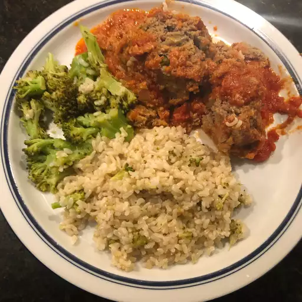

Pastel de carne

Descripcion
Porciones:10
Tiempo de cocina:2 horas
El objetivo principal de este pastel de carne italiano inspirado en albóndigas es mostrarte lo que sucede cuando haces pastel de carne como lo hacían tus abuelos. Durante la Gran Depresión, este tipo de plato era una estrategia popular para aprovechar la poca carne que se tenía para lograr una comida lo más abundante posible.
Ingredientes
- 1 cucharada de aceite de oliva
- 1 cucharada de mantequilla
- 1 cebolla, cortada en cubitos
- sal al gusto
- 4 dientes de ajo, picados
- 1 ½ tazas de pan rallado blanco muy seco
- 1 ½ cups milk
- 2 libras de mandril molido
- ½ taza de perejil fresco picado
- 2 onzas de queso parmesano rallado
- 2 huevos grandes, batidos
- 2 cucharaditas de sal
- 1 cucharadita de pimienta negra recién molida
- 1 pizca de pimienta de cayena o al gusto
- 3 tazas de salsa de tomate, o al gusto
Preparacion
- Precaliente el horno a 325 grados F (165 grados C). Engrase una fuente para hornear de 9x13 pulgadas.
- Caliente el aceite de oliva y la mantequilla juntos en una sartén grande a fuego medio-alto. Saltee la cebolla con una pizca de sal en aceite caliente y mantequilla hasta que esté dorada y suave, de 5 a 10 minutos. Agregue el ajo y saltee hasta que esté fragante, aproximadamente 30 segundos. Retire la sartén del fuego y enfríe la mezcla de cebolla a temperatura ambiente.
- Coloque el pan rallado en un tazón grande. Agregue la leche y revuelva con un tenedor hasta que se combinen. Deje reposar hasta que toda la leche se absorba en el pan rallado, de 15 a 20 minutos.
- Combine la carne molida, la mezcla de cebolla enfriada, el perejil, el queso parmesano, los huevos, 2 cucharaditas de sal, la pimienta negra y la pimienta de cayena en un tazón. Coge un puñado de pan rallado y exprímelo muy suavemente para eliminar el exceso de leche. Repita con el pan rallado restante, transfiera el pan rallado a la mezcla molida y deseche el exceso de leche. Revuelva la mezcla de carne molida hasta que esté uniformemente combinada.
- Coloque la mezcla de carne en una fuente para hornear preparada y forme un pastel de carne de 3x4x10 pulgadas con la carne. Vierta la salsa de tomate sobre el pan y en el fondo del plato.
- Hornee en el horno precalentado hasta que ya no esté rosado en el centro, aproximadamente 1 hora y 10 minutos. Un termómetro de lectura instantánea insertado en el centro debe indicar al menos 160 grados F (70 grados C). Deje reposar el pastel de carne durante al menos 10 minutos antes de cortarlo.

Regresar